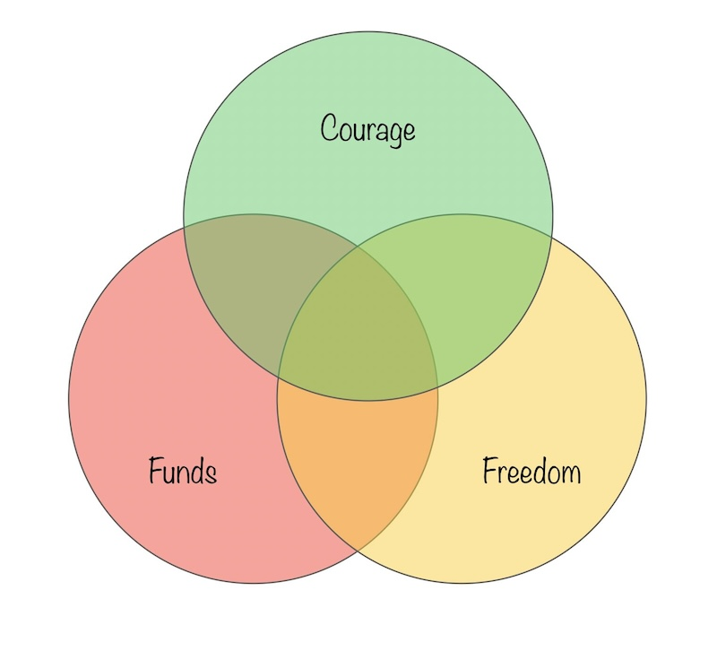

Impossible is a relative notion. In practice, it often refers to something that's conceivable but has no path to reality in sight.
When it comes to build impossible products, there is an equation to it. One that is as simple as 1 + 1 + 1 = impossible.
But a better way to look at it, is this Venn diagram:

If you can bring yourself into a situation where you can have freedom + courage + funds, you can achieve the impossible.
Freedom can mean a partner that supports you, a personal baggage you no longer carry, a pursuit of validation you have let go.
Freedom is ultimately the ability to act on your own volition. Free of burden, free of constraints of life, free of engagements, free of mental blockers. The reason freedom is so important, is because these blockers are usually the first thing that sets a limit to how far you can go.
I'm not implying it's easy to get this freedom, but it is mandatory to have it.
At times, the difficult aspect of this freedom is, that the freedom is taken from you after making a decision that wasn't clearly explicit about coming at the cost of freedom.
Marrying someone with different life goals, taking a job in FAANG, many of these types of decisions will ultimately remove your freedom to act. You may even be happy about surrendering it for the other benefits you are getting.
Courage can mean the internal fire that comfort can't quench, the ability to handle failure, the mental strength to go against the current.
Courage is the force that pushes you to act beyond the set tracks of the road laid by others. The force that pushes you to go forward, the force that motivates you to challenges boundaries.
As a general rule, courage is the exception. Most people create invisible obstacles in their lives out of the slightest one time inconveniences.
The courageous constantly push through, and the impossible requires this force to be sustained.
Funds can mean the disposable time at hand, the decision power to spend resources as desired.
Funds is the overall resources you need to execute on the vision. It's always financial, but not exclusively so.
It can be: access to a supply chain, talent pool, time to spend or even a network of people.
The need for it depends on your skills, your creativity and your resilience, but regardless, you'll need funds.
My address book is packed with people who have two of these - which is already exceptional - but it's hardly enough.
Each of these are generally complementary, but they ultimately diverge in the specifics, so everybody is still working to find their missing piece.
Everything you have admired as exceptional, as impossible; Everything that is layered in made up complexity boils down to this, and you would be surprised to see how common it is for "powerful" people/institution not to have all three. I'm talking about governments, investors, large companies.
It's really hard to line up all three.
If you have all three, you're golden.
If you have all three, you'll make the impossible real.